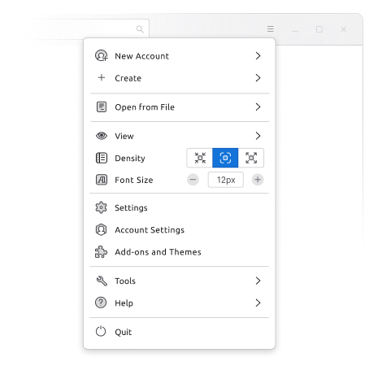
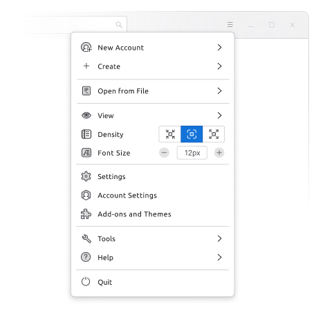

Disciplina: Desenvolvimento de Interfaces Multimédia
Elemento de interface: Spotify
Affordance: Este elemento de interface permite ao utilizador ver a letra da musica que está a ouvir.
Signifiers: Sendo representado a pela cor branca a letra atual, a cinzento a letra já cantada e a preto as proximas a serem cantadas.
Feedback: À medida que a musica avança é feita esta troca de cores e um scroll automático de cima para baixo de modo a acompanhar letra atual.
Desta forma o utilizador após abrir esta interface, consegue facilmente localizar-se na letra.
_________________________________________________________________________________________________________________
Estado de arte: Apps bancárias
Moey:
Pontos Fortes:
- Página inicial simples, sem informação desnecessária;
- Navegação entre funcionalidades feita essencialmente pela dock no fundo da app;
Pontos Fracos:
- Não existe versão web;
ActivoBank:
Pontos Fortes:
- Possui versão web, com as mesmas funcionalidades da aplicação movel;
- Navegação entre funcionalidades feita essencialmente pela dock no fundo da app;
Pontos Fracos:
- Publicidade interna na página inicial d app;
- Acesso muito simples, por vezes até sem a intenção do utilizador a funcionalidades avançadas ou
requerem uma maior atenção antes de usar (contas poupança/ investimentos);
Revolut:
Pontos Fortes:
- Design intuitivo, com acesso a várias funcionalidades;
- Possibilidade de personalizar apagina inicial;
Pontos Fracos:
- Complexidade para iniciantes;
- Atualizações frequentes na mudança de layout que por vezes pode obrigar os utilizadores
a reaprender como utilizar a app, tendo uma maior dificuldade utilizadores de idade mais avançada;
- Versão web com funcionalidades limitadas.
_________________________________________________________________________________________________________________
Utilizadores primários, secundários e terciários
Plataforma: Firefox
Utilizadores Primários: São os indivíduos que usam ativamente o Firefox como seu navegador principal para acessar a internet.
Eles interagem diretamente com o navegador para realizar atividades online, como navegar em sites, fazer pesquisas, assistir a vídeos,
enviar e-mails, entre outros.
Utilizadores Secundários: Este grupo inclui desenvolvedores, programadores e contribuidores que estão envolvidos na melhoria e
no desenvolvimento do próprio Firefox.
Eles podem criar extensões, oferecer feedback, reportar problemas (bugs) ou contribuir para o código-fonte do navegador.
Utilizadores Terciários: São os beneficiários indiretos do Firefox, como empresas, organizações e desenvolvedores de sites.
Eles dependem do Firefox para garantir a compatibilidade dos seus websites ou aplicações web, garantindo uma experiência
consistente para os utilizadores finais que acessam seus serviços por meio do navegador Firefox.
_________________________________________________________________________________________________________________
Novo design: Thunderbird
Old New

 

Esta nova versão do thunderbird (v115 Supernova) possui uma única barra de ferramentas dinâmica, um
conjunto de gráficos renovados, com ícones bonitos com um estilo mais consistente e exclusivo.
O context menu é acessível pelo teclado e foi redesenhado para uma navegação mais rápida e fácil,
com menos submenus, opções globais persistentes e iconografia consistente se combinam para criar uma experiência muito mais intuitiva.
Tem também agora modos de ordenação de pastas, uma renovação do layout vertical onde os e-mails estão listados e uma lista de contactos melhorada.
_________________________________________________________________________________________________________________
Heuristicas de usabilidade de Jacob Nielsen
1. Visibilidade do estado do sistema
2. Relação com o mundo real
3. Controlo e liberdade por parte do utilizador
4. Consistência e padrões
5. Prevenção de erros
6. Reconhecimento em vez de memorização
7. Flexibilidade e eficiência
8. Estética e design minimalista
9. Diagnóstico e correcção de erros
10. Ajuda e documentação
O prototipo de baixa fidelidade implementa essencialmente a prevenção de erros atráves de menus de confirmação, reconhecimento em vez da memorização, pois o
prototipo não possui menus ou labels escondidos e a estetica e design minimalista.